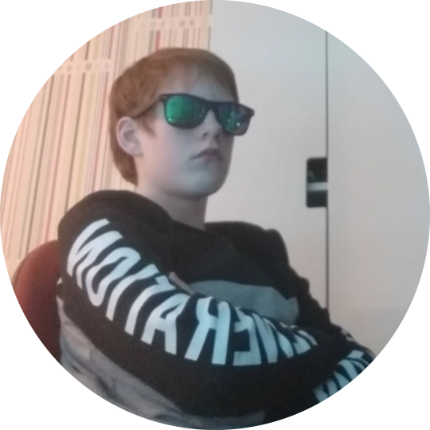

Dylan heeft vele hobbies hij gamed graag en doet vaak speedruns vooral
van zijn favoriete game Hollow
Knight.
Hij doet ook aan scouting omdat hij graag actief
wil blijven en het heel gezelig is.
Hij houdt er ook van om vaak te vissen omdat het heel rust gevend is
en hij zijn gedachtes goed in
orde kan krijgen.
Dylan
Dit is Dylan hij is 16 jaar oud en is geboren op 19 mei 2007.
Hij leeft in Rozenburg. Dylan is een aardige en grappige guy.
zijn favoriete kleur is blauw en hij werkt ook als kassamedewerker bij de Plus
Hij is zijn hele leven in Nederland geweest en is een keertje naar Turkije voor vakantie geweest.

Hobbies
Opleiding en reden
Dylen verwacht van zijn klasgenoten om gezelig te zijn en dat zijn docenten hem kunnen helpen
wanner dat kan.
Dylan ziet zichzelf als een succesvol persoon in 10 jaar en door zijn ambitie om veel geld te verdienen
zal hij dat wel halen.
Hij koos deze opleiding omdat dit iets is wat hij wilt doen.